7 RICM: Reflection Interference Contrast Microscopy
7.1 Principle
RICM (Reflection Interference Contrast Microscopy) is a label-free technique that images the distance \(h(x)\) between a particle or cell membrane and a flat glass substrate, with nanometer axial sensitivity. It exploits the interference between light reflected at the glass-water interface (beam \(I_0\)) and light reflected at the bottom surface of the object (beam \(I_1\), \(I_2\)):
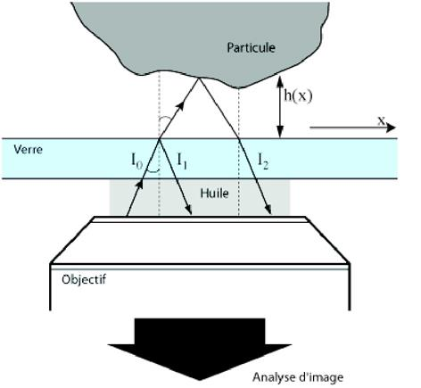
The reflected intensity varies as:
\[I(x) \propto I_0 + I_1 - 2\sqrt{I_0 I_1}\cos\left(\frac{4\pi n\, h(x)}{\lambda} + \phi_0\right)\]
where \(n\) is the refractive index of the medium, \(\lambda\) the illumination wavelength, and \(\phi_0\) an offset phase that depends on the Fresnel reflection coefficients. Bright fringes correspond to constructive interference, dark fringes to destructive interference.
7.2 Newton’s Rings: The Ideal Case
For a perfect sphere of radius \(R\) resting at height \(h_0\) above the substrate, \(h(x) = h_0 + x^2/2R\), giving concentric circular fringes — Newton’s rings:
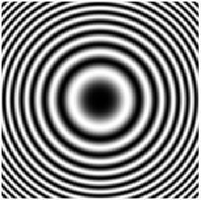
7.3 Reading the Fringes
The fringe pattern maps \(h(x)\) through the phase of the cosine. Between two consecutive fringes (dark-to-dark or bright-to-bright), \(h\) increases by \(\lambda/2n \approx 180\)–\(200\) nm for green light in water. Lateral resolution is limited by the Rayleigh criterion (\(\sim 200\)–\(300\) nm), setting the minimum resolvable \(\Delta x\).
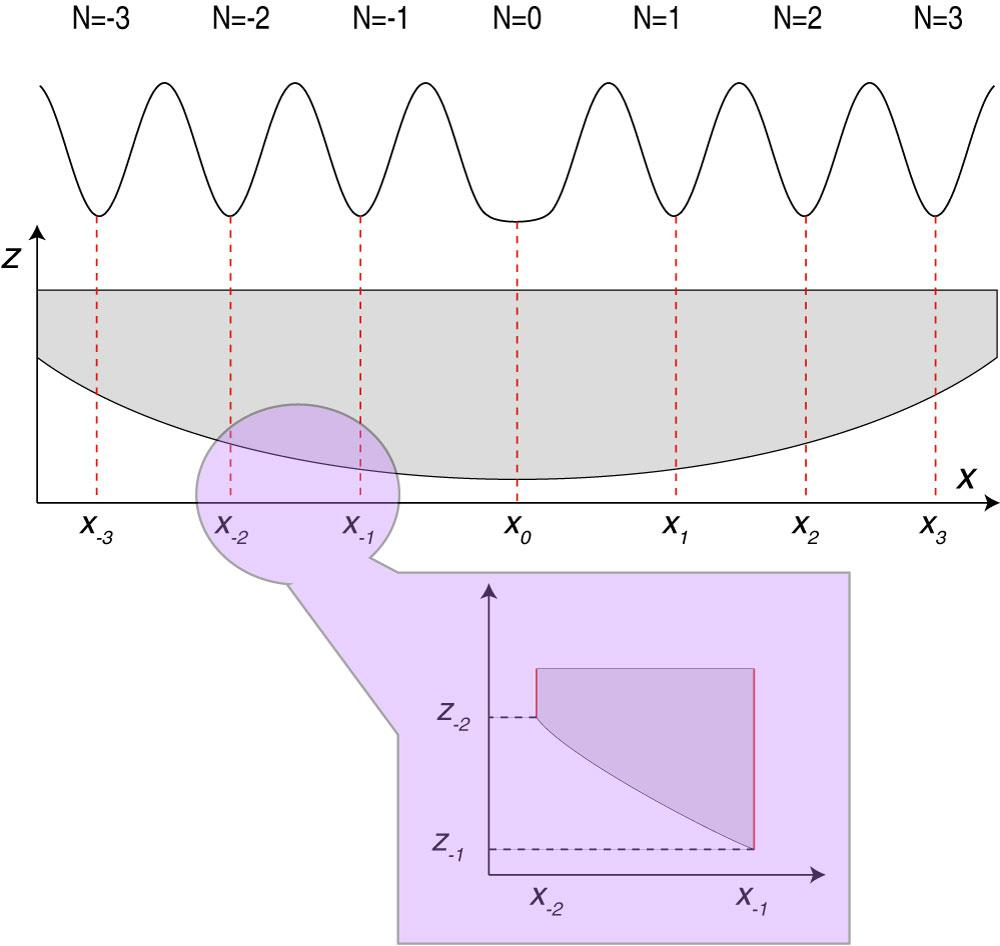
7.4 Microscope Setup
RICM uses reflected-light illumination with a monochromatic source (interference filter on an HBO lamp) and a standard reflected-light microscope with an antiflex objective (with crossed polarizers to suppress specular reflections from the lens surfaces):
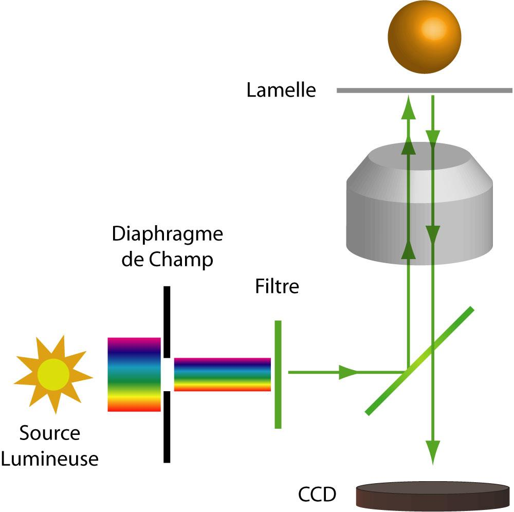
7.5 Glass Bead on Glass: A Reference Experiment
A glass bead (\(n \approx 1.52\)) sedimenting on a glass coverslip in water generates a clean Newton’s ring pattern that can be quantitatively modeled:
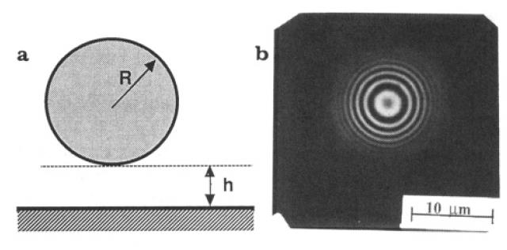
7.6 Effect of Numerical Aperture
A key experimental limitation of RICM is that increasing NA increases the range of illumination angles, which averages out the fringe contrast. Higher-order fringes (large \(h\)) are more sensitive to this averaging than the central fringes. This sets a practical upper limit on the measurable \(h\) — typically \(\sim 500\)–\(1000\) nm for standard antiflex objectives.
7.7 Wetting and Contact Angles
RICM can directly image the contact line and contact angle of droplets or vesicles on surfaces, giving access to solid-liquid-air surface energies:
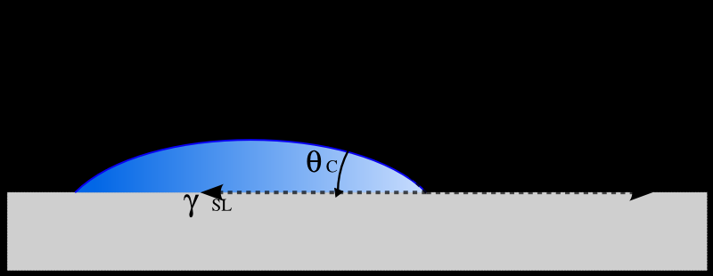
7.8 Absolute Height Measurement: The Dual Wavelength Solution
Single-wavelength RICM measures \(h\) modulo \(\lambda/2n\) — i.e., fringe order ambiguity prevents absolute height determination beyond the first fringe. The dual-wavelength solution uses two illumination wavelengths \(\lambda_\alpha\) and \(\lambda_\beta\) simultaneously; the beat period \(\Lambda = \lambda_\alpha\lambda_\beta / |2n(\lambda_\alpha - \lambda_\beta)|\) is much larger, extending the unambiguous range to several micrometers.
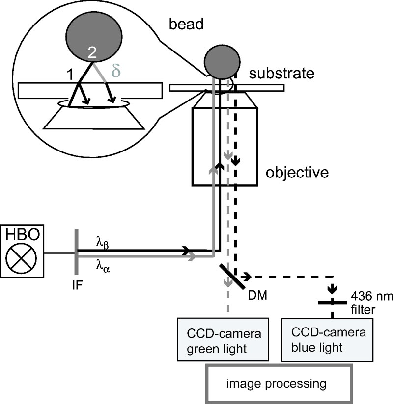
7.9 Colloidal Interactions: Measuring the Interaction Potential
For a colloidal particle near a surface, the equilibrium height distribution \(P(h)\) is related to the interaction potential \(V(h)\) via Boltzmann:
\[P(h) \propto \exp\left(-\frac{V(h)}{k_BT}\right)\]
RICM measures the instantaneous \(h(x,t)\) from the fringe pattern; recording many frames gives \(P(h)\) and hence \(V(h)\) with \(k_BT\) resolution.
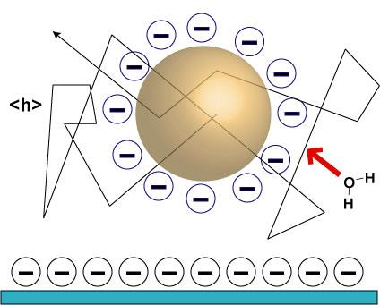
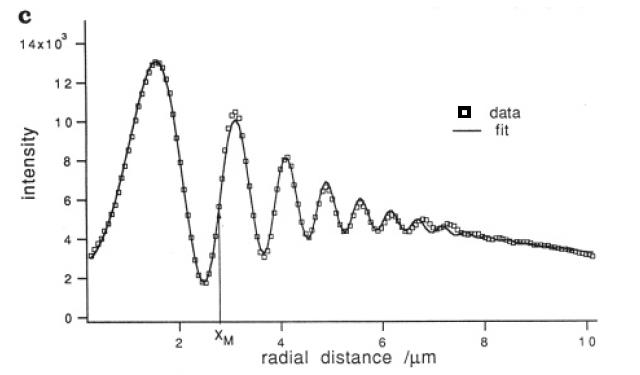
7.10 Cell Adhesion
RICM was originally developed to study cell adhesion. It directly images the contact zone between a cell and the substrate, without fluorescent labels. Close contact regions appear dark (small \(h\), destructive interference for appropriate parameters); non-adherent regions appear bright.
7.10.1 Modeling Cell Adhesion
The classic Bell-Evans-Dembo model describes cell adhesion as a competition between specific receptor-ligand bonds in the contact zone and repulsive interactions (glycocalyx, membrane tension) at the periphery:
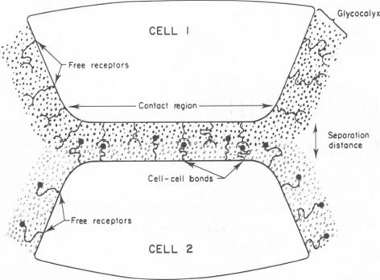
7.10.2 Liposomes on Glass
Tense liposomes on glass provide a model system with well-defined mechanics. Their RICM image shows a flat central contact zone surrounded by fringes from the curved membrane:
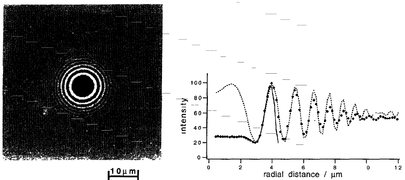
7.10.3 Ligand-Receptor Interactions
Functionalizing the substrate and the liposome/cell membrane with complementary ligand-receptor pairs allows direct quantification of specific adhesion energies:
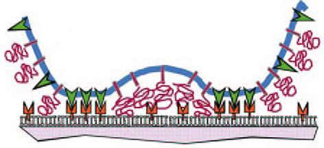
7.10.4 Using Membrane Fluctuations
For weakly adhered membranes, thermal fluctuations modulate \(h(x,t)\). The amplitude of fluctuations \(\langle u^2\rangle^{1/2}\) is suppressed in the contact zone (bonds restrict membrane motion) and recovers outside it — providing a spatially resolved map of bond density:
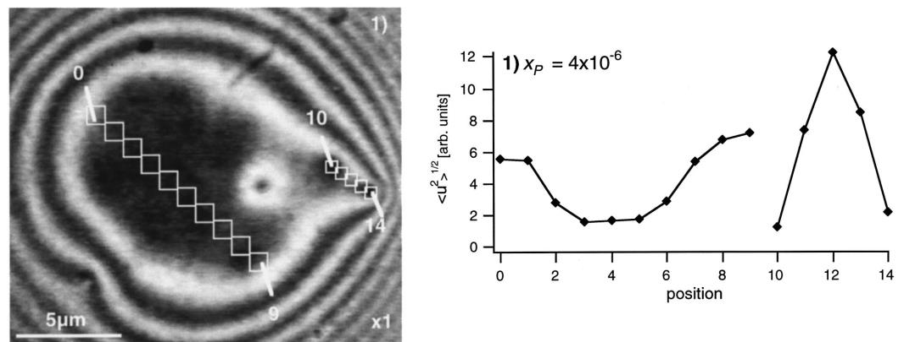
RICM requires no fluorescent labels and gives nanometer-scale axial information in real time. Its main limitations are: (1) fringe order ambiguity (resolved by dual-wavelength or simulation); (2) sensitivity to refractive index inhomogeneities in the sample; (3) restricted to objects close to the substrate (\(h < 1\)–\(2\,\mu\)m for reliable fringe counting). It is most powerful when combined with fluorescence for multi-modal imaging.